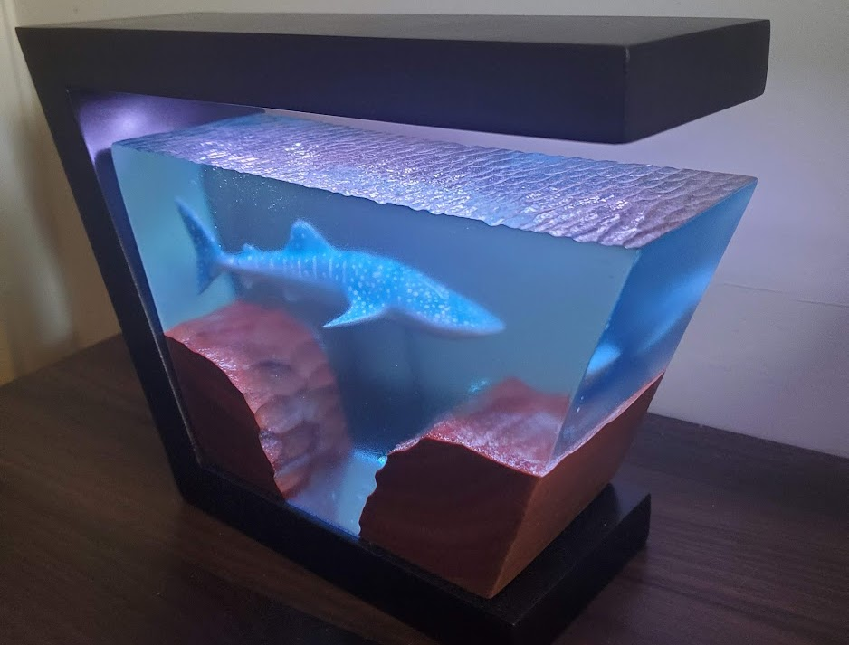
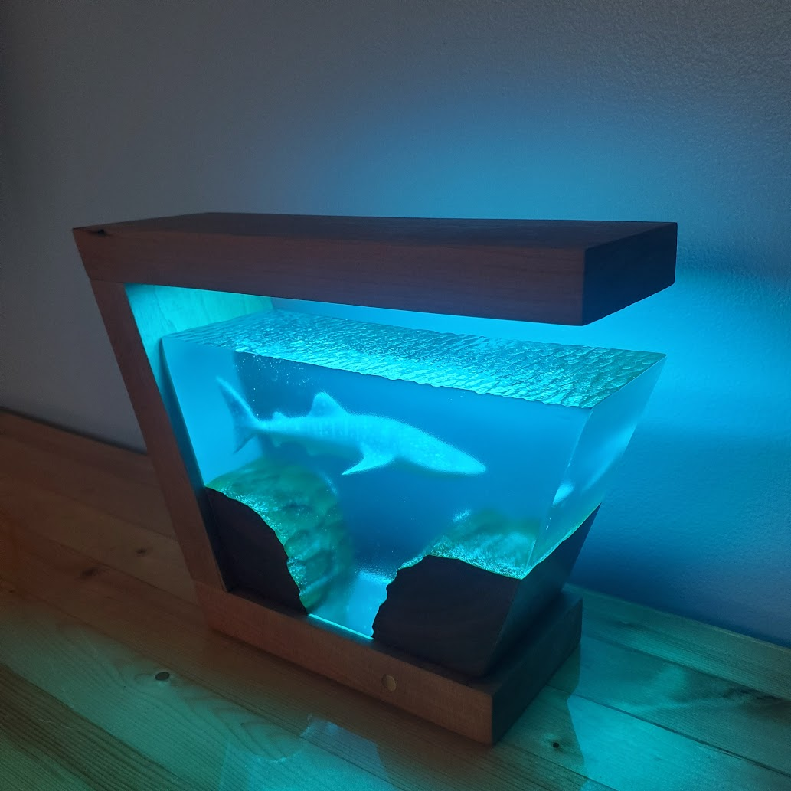

This lamp was a very enjoyable build which ended up getting an upgrade
over the years. I 3D modeled the whale shark in blender and then printed
it using my SLA printer. I then cast the shark and several carved pieces
of wood in resin. After that, I designed the lamp in AutoCAD and printed
it on an FDM printer. I was careful to accommodate the power source,
lights, and Arduino board when modeling the lamp so that all the
components would fit and the wire routing would be easy. The final part
of the lamp was the most difficult. I programmed the LED array so that
random LEDs would fade in and out at random times. This was done by
splitting up the LED arrays into multiple sections that were controlled
by an object and class that determined the randomness based on variable
electromagnetic interference picked up by the boards exposed pins. This
object and class could then be run on each section of the array
simultaneously so that it could simulate the sun going through clouds
and water.
The upgrade came in the form of switching out the 3D printed frame with
one of cherry. This was difficult to do because of the strange geometry
required. I also added a touch sensor for on/off control and replaced
the Arduino with an ESP32 for wireless connectivity.
